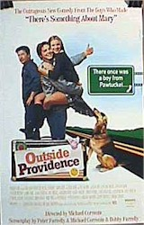

Contents | Features | Reviews | Books | Archives | Store

Contents | Features | Reviews | Books | Archives | Store
|  |
Outside Providence by Cynthia
Fuchs |
Shawn
Hatosy says he doesn't "feel like a movie star." This despite the fact
that he is starring in Outside Providence, co-produced and co-written by
Peter and Bobby Farrelly (who also made Something About Mary, Dumb and
Dumber, and Kingpin, a resume that puts them at the forefront of
today's gross-out comedy trend). Hatosy and his co-star, Amy Smart, are
promoting the new film (which keeps the vomit jokes somewhat in check), in which
they play high school lovers who smoke dope and generally break rules, circa
1970s.
Answering
questions concerning the film's content and rating (R), they are strikingly
poised, proper, and thoughtful about their new roles as "stars." Both
smile sweetly and say thank you for the coffee offered to them by their
handlers.
Hatosy's
self-effacing grace goes a long way toward appeasing interviewers who are
concerned that they aren't going to talk with the Farrelly brothers themselves,
or Alec Baldwin, who plays Hatosy's father in the film. These "stars"
are only promoting the film on television: this is what stars -- who are busy
people, after all -- can do. They can decide how to use their time. When you're
up and coming, you do what you're told to do by the "company'' (in this
case, Miramax). Reporters, meanwhile, have to cover newsworthy subjects, like
movie stars. Hence the minor dilemma of the moment: here's the young (23) and
quietly enthusiastic Hatosy, feeling not like a movie star in a room full of
interviewers who want him to be one.
He
says he's proud of the film, which he calls an "honest'' narrative about
growing up in Rhode Island during the seventies. When reading the script --
written by the Farrellys and director Michael Corrente (who also made the
underseen Federal Hill), and based on a 1988 novel by Peter Farrelly --
Hatosy says he felt "these were things that have happened to me, sort of in
different ways, the relationship with his father, first love."
And
yet, he points out, these general similarities are also mitigated by some real
differences between his own experience and that of Timothy Dunphy, his character
in Outside Providence. Coming up in suburban Frederick, Maryland, Hatosy
knew early on that he wanted to perform, and began working in commercials, high
school theater, and small independent films in Baltimore and Washington DC. He
also formed a band for which he played guitar, sang, and wrote songs. And he
made an industrial film, for the American Pharmaceutical Company, at age 16. He
played a teen who is informed by his doctor that he has an STD. He's thankful,
he says, that he has never seen the film.
Despite
-- or perhaps because of -- his lack of experience as role model, Hatosy seems
especially prudent and self-aware. Asked to describe the differences between
“stoner” culture -- which figures largely in Dunphy's on screen life -- in
the 70s and the 90s, Hatosy shows himself to be a capable team player (as the
film's explicit depiction of drug use may trouble some viewers, despite the fact
that such use is not condoned, per se). He observes that "the pot was
cheaper" back then. And, he says, so very correctly, "these kids [in
the movie] didn't know the bad in doing drugs. Now there's so much more
information about why it's not good. And there's a lot more drugs too."
Smart
(Starship Troopers and Varsity Blues) agrees. She also sees the
movie as a nostalgic look at a time before AIDS, too-available dangerous drugs,
and "violence that's gotten out of proportion." And while she tries to
choose parts that don't contribute to the media ruckus, she admits that
"sometimes you just have to work'' in movies where "you might not
agree with the politics." A veteran of independent films, Smart appreciates
the luxury of working on a film with a larger budget -- "I had a big
trailer and nice food" -- and wants to make films featuring great
performances, or those that "will change people's lives," like All
About Eve or Kramer vs. Kramer.
Hatosy
also takes his status as a representative of adolescence seriously, seeing
himself as both lucky and accountable. He cites the financial success of Titanic
and Good Will Hunting (two pictures that might be considered
"prestige," compared to the slew of high school pictures that have
filled screens during the past couple of years) as central to the apparent sea
change. "And then Scream of course,'' he adds almost as an
afterthought, opened up "a lot more opportunities for young guys like
myself." (Hatosy was a member of the alien-bait ensemble in Kevin
Williamson's and Robert Rodriguez's The Faculty). "People are now
willing to cast young people, because all these kids are going to see teen
movies."
At
the same time, he sees Outside Providence as appealing to a crossover
audience, teens and viewers who grew up during the 70s, who will remember the
music -- by Steppenwolf, The Who, the Allman Brothers, the Beach Boys, the
Eagles -- as well as, perhaps, some of the events (getting busted by adults,
getting over on adults, getting serious about sex or friendship with peers). He
credits this appeal to the Farrellys and Corrente, who included in the script
their own stories. For instance, Corrente's father gave him a birds-and-bees
talk much like the one that Baldwin gives Hatosy in the film, when he says that
sex is like a Chinese dinner, "It ain't over till you both get your
cookies." And his mother and father shot Christmas ornaments off the tree
one bright holiday morning.
Corrente
-- a former house-builder whose early "film school" was watching
movies like The Bicycle Thief on TV with his film-fanatic father --
thinks Outside Providence will appeal to kids and their parents,
believing that it "delivers on a lot of levels that other teen pictures
aren't delivering, like heart and soul and spirit." He wanted to do the
film, he says, "because I was obsessed with the book," which he read
years ago and saw as close to his own experience growing up in Rhode Island. He
had no notion of marketing to a wide audience when making it, and now leaves
that process to the Miramax experts.
The
writer-director-co-producer says that he didn't think about ratings during
production: it has been rated an R, because, Corrente says sharply, "You're
only allowed 2 'f*cks' in a PG-13." But he doesn't see this as a problem,
since "the best way to get kids interested in a movie is to tell them they
can't see it." He sees the resurgence of a "conservative"
cultural atmosphere as "nonsense," and has faith that serious,
independent-minded movies -- like his -- will find their audiences despite such
tedious temporary obstacles.
Be sure to read David Luty's review.
Contents | Features | Reviews
| Books | Archives | Store
Copyright © 1999 by Nitrate Productions, Inc. All Rights Reserved.